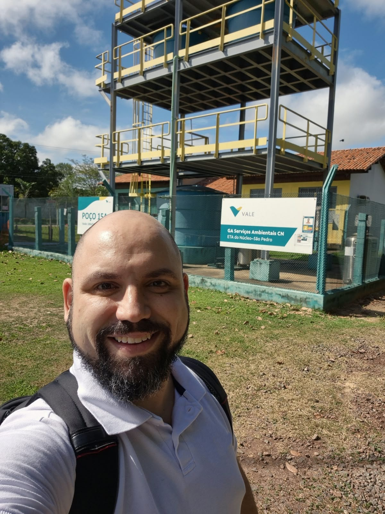

01
Falta de equipe
O leiloeiro começa sozinho e acumula TI, marketing, atendimento e a operação do pregão ao mesmo tempo.
Para leiloeiros oficiais iniciando a operação
Você foi nomeado para prospectar ativos, negociar com comitentes e conduzir o pregão. Mas, no início, quase todo leiloeiro esbarra nos mesmos obstáculos:
O leiloeiro começa sozinho e acumula TI, marketing, atendimento e a operação do pregão ao mesmo tempo.
Montar uma equipe fixa de TI, marketing e atendimento antes do primeiro edital pesa no caixa e aumenta o risco do negócio.
Profissionais que dominam plataformas de lances, transmissão ao vivo e as exigências de edital são raros e levam tempo para treinar.
E, no dia a dia, isso vira:
Insegurança técnica na transmissão ao vivo do pregão.
Plataformas de lances e canais de atendimento mal configurados.
Campanhas que geram cliques, mas não arrematantes habilitados.
Tempo perdido com suporte básico e dúvidas repetitivas de edital.
A solução
Prestação de serviços e consultoria em TI, Marketing e Atendimento. Em algumas frentes eu atuo diretamente; em outras, oriento como você e sua equipe devem atuar — para iniciar a operação sem falhas e com padrão de veterano desde o Dia 1.
Dou o suporte para estruturar sua operação sem falhas e auxilio na contratação da equipe de acordo com a sua necessidade.
Pacotes por projeto, por evento ou recorrentes, em vez de uma folha fixa.
Mais de 10 anos de bastidores, sem curva de aprendizado no seu primeiro edital.
O trabalho, etapa por etapa
Do setup inicial ao pós-pregão, este é todo o trabalho realizado — em cada etapa, executando junto com você ou orientando a sua equipe.

Quem sou eu — visão 360º do mercado
Sou Vinicius M. Carvalho. Nos últimos 10 anos, estive nos bastidores de centenas de leilões judiciais e extrajudiciais, garantindo que a tecnologia, o marketing e o atendimento funcionassem com precisão. Minha trajetória une a operação prática dentro do escritório do leiloeiro com a inteligência de negócios das plataformas de tecnologia.
Eu sei exatamente o que acontece na sala de operação antes, durante e depois da batida do martelo.
Montagem técnica, configuração de redes, administração do sistema de gestão de lances e lançamento de lances presenciais em tempo real.
Identidade visual, diagramação de catálogos, gestão de Google Ads e Facebook Ads e automação de leads via RD Station.
Atendimento às exigências rigorosas de tribunais, órgãos públicos, bancos e seguradoras.
Eu falo a língua dos desenvolvedores e sei extrair o máximo das ferramentas de leilão online.
Triagem técnica de demandas, diagnóstico rápido de falhas operacionais e acompanhamento direto de atualizações junto ao time de TI.
Capacitação de dezenas de leiloeiros no uso das plataformas e apoio na documentação de credenciamento junto a órgãos públicos.
Estruturação de estúdios de streaming (OBS Studio) e moderação técnica de leilões ao vivo para garantir estabilidade total.
Experiência com as exigências de comitentes como
Reduza o risco técnico da sua operação, encurte sua curva de aprendizado e transmita credibilidade imediata para juízes, comitentes e arrematantes.
Vamos agendar uma conversa de 20 minutos para desenhar a estrutura do seu próximo leilão?